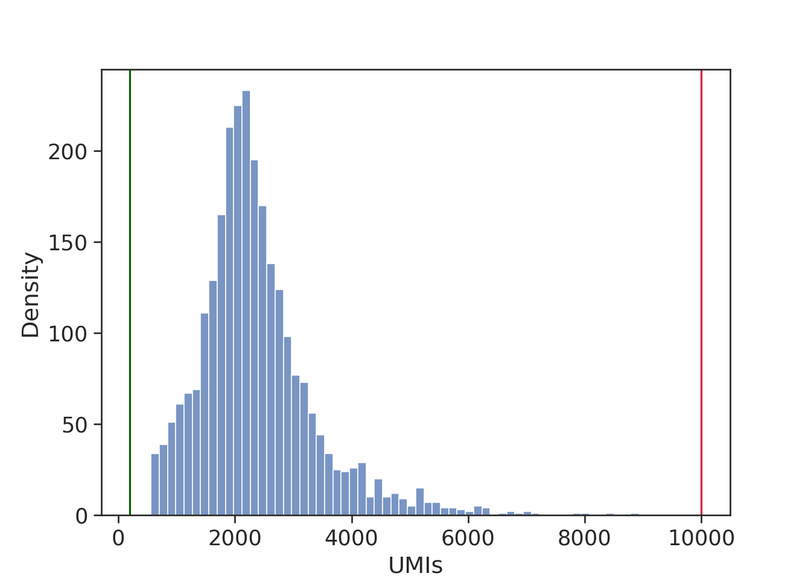
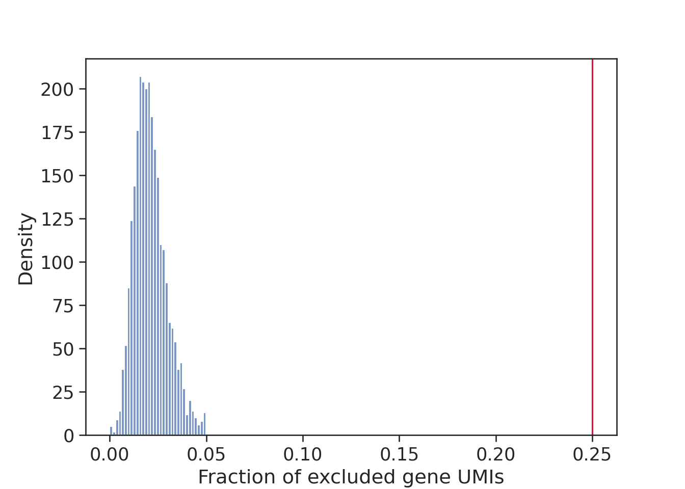
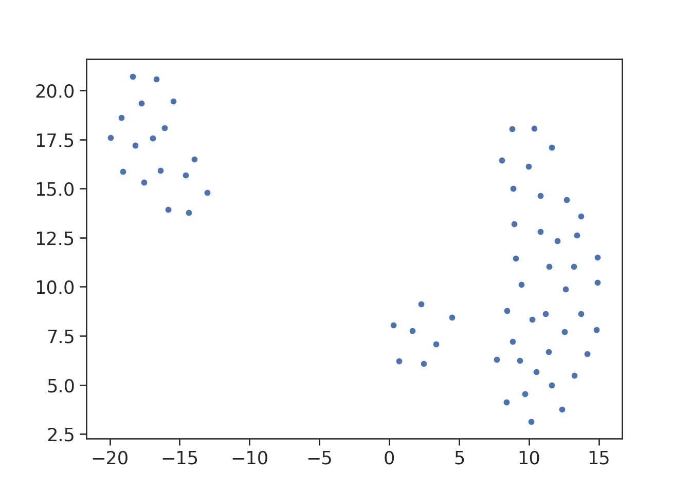

3.1 MC2 (Python)
Here we construct metacells using Metacell-2 (MC2). The code is adapted from the author’s tutorial.
Imports
import os
import numpy as np
import pandas as pd
import anndata as ad
import scanpy as sc
import matplotlib.pyplot as plt
import seaborn as sns
import metacells as mc
import sys
sys.path.append('./mc_QC/')
import mc_QCParameters
MC_tool = "MC2"
gamma = 50 # graining level
# Here we can modify dataset
proj_name = ["cell_lines", "3k_pbmc"][1]
annotation_label = {'cell_lines':'cell_line',
'3k_pbmc':'louvain'}[proj_name] # name of annotation field (obs)Load data
## here code to download dataset and store it at f'Metacell_tutorial/data/{proj_name}/singlecell_anndata_filtered.h5ad'# Load pre-filtered data
data_folder = os.path.join("./data/", proj_name) # here path to folder with adata
ad = sc.read(os.path.join(data_folder, "singlecell_anndata_filtered.h5ad"))Setup MC object
mc.ut.set_name(ad, proj_name)Gene filtering according to MC2
excluded_gene_names = [] # for example, ['IGHMBP2', 'IGLL1', 'IGLL5', 'IGLON5', 'NEAT1', 'TMSB10', 'TMSB4X']
excluded_gene_patterns = ['MT-.*']
mc.pl.analyze_clean_genes(ad,
excluded_gene_names=excluded_gene_names,
excluded_gene_patterns=excluded_gene_patterns,
random_seed=123456)
#> set 3k_pbmc.var[properly_sampled_gene]: 16579 true (50.64%) out of 32738 bools
#> set 3k_pbmc.var[excluded_gene]: 13 true (0.03971%) out of 32738 bools
#> set 3k_pbmc.var[noisy_lonely_gene]: 0 true (0%) out of 32738 bools
mc.pl.pick_clean_genes(ad)
#> set 3k_pbmc.var[clean_gene]: 16566 true (50.6%) out of 32738 boolsCell fintering
Since our data is pre-processed and low-quality cells have been already filtered out, this step is not applicable to our data, but we keep this chunk so that you can apply cell filtering to a newly generated dataset.
The first round of cell cleaning usually implies filltering out cell with very low and very hight UMI content. The second round includes cell filtering based on mitochondrial and/or ribosomal content. We will skip both steps as our data have been pre-filtered and will use very lenient cutoffs (properly_sampled_min_cell_total, properly_sampled_max_cell_total and properly_sampled_max_excluded_genes_fraction) such that all the cells are kept for the metacell construction.
### The first round (high/low UMIs)
properly_sampled_min_cell_total = 200 # setup for the dataset that will be used
properly_sampled_max_cell_total = 10000 # setup for the dataset that will be used total_umis_of_cells = mc.ut.get_o_numpy(ad, name='__x__', sum=True)
df_umis = pd.DataFrame(total_umis_of_cells, columns = ['total_UMIs'])
plt.figure()
sns.histplot(data=df_umis, x="total_UMIs")
plt.xlabel('UMIs')
plt.ylabel('Density')
plt.axvline(x=properly_sampled_min_cell_total, color='darkgreen')
plt.axvline(x=properly_sampled_max_cell_total, color='crimson')
plt.show()
too_small_cells_count = sum(total_umis_of_cells < properly_sampled_min_cell_total)
too_large_cells_count = sum(total_umis_of_cells > properly_sampled_max_cell_total)
too_small_cells_percent = 100.0 * too_small_cells_count / len(total_umis_of_cells)
too_large_cells_percent = 100.0 * too_large_cells_count / len(total_umis_of_cells)
print(f"Will exclude %s (%.2f%%) cells with less than %s UMIs"
% (too_small_cells_count,
too_small_cells_percent,
properly_sampled_min_cell_total))
#> Will exclude 0 (0.00%) cells with less than 200 UMIs
print(f"Will exclude %s (%.2f%%) cells with more than %s UMIs"
% (too_large_cells_count,
too_large_cells_percent,
properly_sampled_max_cell_total))
#> Will exclude 0 (0.00%) cells with more than 10000 UMIs## The second round (content of non-clean genes, e.g., mito-genes)
properly_sampled_max_excluded_genes_fraction = 0.25excluded_genes_data = mc.tl.filter_data(ad, var_masks=['~clean_gene'])[0]
excluded_umis_of_cells = mc.ut.get_o_numpy(excluded_genes_data, name='__x__', sum=True)
excluded_fraction_of_umis_of_cells = excluded_umis_of_cells / total_umis_of_cells
df_umis = pd.DataFrame(excluded_fraction_of_umis_of_cells, columns = ['frac_excl_genes_UMIs'])
plt.figure()
sns.histplot(df_umis, x = 'frac_excl_genes_UMIs')
plt.xlabel('Fraction of excluded gene UMIs')
plt.ylabel('Density')
plt.axvline(x=properly_sampled_max_excluded_genes_fraction, color='crimson')
plt.show()
too_excluded_cells_count = sum(excluded_fraction_of_umis_of_cells > properly_sampled_max_excluded_genes_fraction)
too_excluded_cells_percent = 100.0 * too_excluded_cells_count / len(total_umis_of_cells)
print(f"Will exclude %s (%.2f%%) cells with more than %.2f%% excluded gene UMIs"
% (too_excluded_cells_count,
too_excluded_cells_percent,
100.0 * properly_sampled_max_excluded_genes_fraction))
#> Will exclude 0 (0.00%) cells with more than 25.00% excluded gene UMIsmc.pl.analyze_clean_cells(
ad,
properly_sampled_min_cell_total=properly_sampled_min_cell_total,
properly_sampled_max_cell_total=properly_sampled_max_cell_total,
properly_sampled_max_excluded_genes_fraction=properly_sampled_max_excluded_genes_fraction
)
#> set 3k_pbmc.obs[properly_sampled_cell]: 2638 true (100%) out of 2638 bools
mc.pl.pick_clean_cells(ad)
#> set 3k_pbmc.obs[clean_cell]: 2638 true (100%) out of 2638 bools
# Extract clean dataset (with filtered cells and genes)
ad = mc.pl.extract_clean_data(ad)
#> set 3k_pbmc.clean.obs[full_cell_index]: 2638 int64s
#> set 3k_pbmc.clean.var[full_gene_index]: 16566 int64sRunning MC2
Metacell-2 uses its own feature selection approach (i.e., selection of genes used to build metacells). Additionally, we can explicitly specify which features to use by providing two arguments: feature_gene_names - genes that have to be used forbidden_gene_names - genes to exclude.
In contrast to the SuperCell and SEACells, Metacell-2 does not allow to explicitly obtain metacell data at a user-defined graining level. Instead, to vary graining level, we have to vary a target_metacell_size parameter, that is 160000 by default. Here we provide a chunk to calibrate this value to get a desired graining level. Please, increase or decrease scale if the obtained graining level gamma_obtained is lower or larger than the requested one (gamma).
Estimate target_metacell_size (gamma)
print(f'The requested graining level is {gamma}, lets estimate the target_metacell_size that should result in such graining level.')
#> The requested graining level is 50, lets estimate the target_metacell_size that should result in such graining level.
scale = 2 # increase or decrease if the obtained graining level (`gamma_obtained`) is significantly > or < then the requested one `gamma`
N_c = ad.shape[0]
# estimated mean UMI content in downsampled data
est_downsample_UMI = np.quantile(np.array(total_umis_of_cells), 0.05)
target_metacell_size = int(est_downsample_UMI * gamma * scale)
target_metacell_size
#> 101455Aggregate metacells
mc.pl.divide_and_conquer_pipeline(
ad,
#feature_gene_names = feature_gene_names, # comment this line to allow Metacell2 selecting features
#forbidden_gene_names = forbidden_gene_names, # comment this line to allow Metacell2 selecting features
target_metacell_size = target_metacell_size,
random_seed = 123456)
#> set 3k_pbmc.clean.var[rare_gene]: 0 true (0%) out of 16566 bools
#> set 3k_pbmc.clean.var[rare_gene_module]: 16566 int32 elements with all outliers (100%)
#> set 3k_pbmc.clean.obs[cells_rare_gene_module]: 2638 int32 elements with all outliers (100%)
#> set 3k_pbmc.clean.obs[rare_cell]: 0 true (0%) out of 2638 bools
#> set 3k_pbmc.clean.layers[downsampled]: csr_matrix 2638 X 16566 float32s (1218892 > 0)
#> set 3k_pbmc.clean.uns[downsample_samples]: 989
#> set 3k_pbmc.clean.var[high_top3_gene]: 552 true (3.332%) out of 16566 bools
#> set 3k_pbmc.clean.var[high_total_gene]: 4519 true (27.28%) out of 16566 bools
#> set 3k_pbmc.clean.var[high_relative_variance_gene]: 3027 true (18.27%) out of 16566 bools
#> set 3k_pbmc.clean.var[feature_gene]: 293 true (1.769%) out of 16566 bools
#> set 3k_pbmc.clean.obsp[obs_similarity]: ndarray 2638 X 2638 float32s
#> set 3k_pbmc.clean.obsp[obs_outgoing_weights]: csr_matrix 2638 X 2638 float32s (119842 > 0)
#> set 3k_pbmc.clean.obs[seed]: 491 outliers (18.61%) out of 2638 int32 elements with 60 groups with mean size 35.78
#> set 3k_pbmc.clean.obs[candidate]: 0 outliers (0%) out of 2638 int32 elements with 63 groups with mean size 41.87
#> set 3k_pbmc.clean.var[gene_deviant_votes]: 936 positive (5.65%) out of 16566 int32s
#> set 3k_pbmc.clean.obs[cell_deviant_votes]: 899 positive (34.08%) out of 2638 int32s
#> set 3k_pbmc.clean.obs[dissolved]: 10 true (0.3791%) out of 2638 bools
#> set 3k_pbmc.clean.obs[metacell]: 909 outliers (34.46%) out of 2638 int64 elements with 62 groups with mean size 27.89
#> set 3k_pbmc.clean.obs[outlier]: 909 true (34.46%) out of 2638 bools
#> set 3k_pbmc.clean.uns[pre_directs]: 0
#> set 3k_pbmc.clean.uns[directs]: 1
#> set 3k_pbmc.clean.var[pre_high_total_gene]: * <- 0
#> set 3k_pbmc.clean.var[high_total_gene]: 4519 positive (27.28%) out of 16566 int32s
#> set 3k_pbmc.clean.var[pre_high_relative_variance_gene]: * <- 0
#> set 3k_pbmc.clean.var[high_relative_variance_gene]: 3027 positive (18.27%) out of 16566 int32s
#> set 3k_pbmc.clean.var[forbidden_gene]: * <- False
#> set 3k_pbmc.clean.var[pre_feature_gene]: * <- 0
#> set 3k_pbmc.clean.var[feature_gene]: 293 positive (1.769%) out of 16566 int32s
#> set 3k_pbmc.clean.var[pre_gene_deviant_votes]: * <- 0
#> set 3k_pbmc.clean.obs[pre_cell_directs]: * <- 0
#> set 3k_pbmc.clean.obs[cell_directs]: * <- 0
#> set 3k_pbmc.clean.obs[pre_pile]: * <- -1
#> set 3k_pbmc.clean.obs[pile]: * <- 0
#> set 3k_pbmc.clean.obs[pre_candidate]: * <- -1
#> set 3k_pbmc.clean.obs[pre_cell_deviant_votes]: * <- 0
#> set 3k_pbmc.clean.obs[pre_dissolved]: * <- False
#> set 3k_pbmc.clean.obs[pre_metacell]: * <- -1
## make anndata of metacells
mc_ad = mc.pl.collect_metacells(ad, name='metacells')
#> set metacells.var[excluded_gene]: 0 true (0%) out of 16566 bools
#> set metacells.var[clean_gene]: 16566 true (100%) out of 16566 bools
#> set metacells.var[forbidden_gene]: 0 true (0%) out of 16566 bools
#> set metacells.var[pre_feature_gene]: 0 positive (0%) out of 16566 int32s
#> set metacells.var[feature_gene]: 293 positive (1.769%) out of 16566 int32s
#> set metacells.obs[pile]: [ 0, 0, 0, 0, 0, 0, 0, 0, 0, 0, 0, 0, 0, 0, 0, 0, 0, 0, 0, 0, 0, 0, 0, 0, 0, 0, 0, 0, 0, 0, 0, 0, 0, 0, 0, 0, 0, 0, 0, 0, 0, 0, 0, 0, 0, 0, 0, 0, 0, 0, 0, 0, 0, 0, 0, 0, 0, 0, 0, 0, 0, 0 ]
#> set metacells.obs[candidate]: [ 0, 1, 2, 3, 4, 5, 6, 7, 8, 9, 10, 11, 12, 13, 14, 15, 16, 17, 18, 19, 20, 21, 22, 23, 24, 25, 26, 27, 28, 29, 30, 31, 32, 34, 35, 36, 37, 38, 39, 40, 41, 42, 43, 44, 45, 46, 47, 48, 49, 50, 51, 52, 53, 54, 55, 56, 57, 58, 59, 60, 61, 15 ]Here we estimate whether a deviation of the obtained gamma is acceptable, and if not, suggest to increase or decrease scale parameter to get better graining level.
gamma_obtained = ad.shape[0]/mc_ad.shape[0]
print(gamma_obtained)
#> 42.54838709677419
gamma_dev = (gamma_obtained - gamma)/gamma
if abs(gamma_dev) < 0.3:
gamma_dev = 0
if gamma_dev < 0:
print("Increase `target_metacell_size` parameter by increasing `scale` and re-run metacell divide_and_conquer_pipeline() to get larger graining level")
elif gamma_dev > 0:
print("Deacrease `target_metacell_size` parameter by decreasing `scale` and re-run metacell divide_and_conquer_pipeline() to get smaller graining level")
elif gamma_dev == 0:
print("The obtained graining level is acceptable, no need to re-run the metacell divide_and_conquer_pipeline() with a new `target_metacell_size` ")
#> The obtained graining level is acceptable, no need to re-run the metacell divide_and_conquer_pipeline() with a new `target_metacell_size`If the obtained graining level is not acceptable and you updated scale parameter according to suggestion, do not forget to re-run chunk ?? ??
Visualize metacells
mc.pl.compute_umap_by_features(mc_ad, max_top_feature_genes=1000,
min_dist=2.0, random_seed=123456)
#> set metacells.var[top_feature_gene]: 293 true (1.769%) out of 16566 bools
#> set metacells.obsp[obs_balanced_ranks]: 762 nonzero (19.82%) out of 3844 elements
#> set metacells.obsp[obs_pruned_ranks]: 257 nonzero (6.686%) out of 3844 elements
#> set metacells.obsp[obs_outgoing_weights]: 257 nonzero (6.686%) out of 3844 elements
#> set metacells.obsp[umap_distances]: csr_matrix 62 X 62 float32s (3782 > 0)
#> /Users/mariiabilous/Documents/PhD/UNIL/R/Metacell_tutorial/my_env_mc2/lib/python3.8/site-packages/umap/umap_.py:1356: RuntimeWarning: divide by zero encountered in power
#> return 1.0 / (1.0 + a * x ** (2 * b))
#> /Users/mariiabilous/Documents/PhD/UNIL/R/Metacell_tutorial/my_env_mc2/lib/python3.8/site-packages/umap/umap_.py:1780: UserWarning: using precomputed metric; inverse_transform will be unavailable
#> warn("using precomputed metric; inverse_transform will be unavailable")
#> set metacells.obs[umap_x]: [ 1.6564819, 10.523616, 0.29960603, 12.346935, -18.181883, 10.824747, 9.3235655, 11.606001, 8.378801, 11.439771, -18.370312, 13.707805, -16.662771, 13.427194, 10.35691, 0.69431365, -16.371231, 8.772759, 8.827683, -15.460641, 10.793309, 4.4988446, -17.57337, 7.6907706, 14.141677, 8.847828, 10.136032, 8.403874, 9.716653, -19.049778, 3.3346436, 8.916034, -17.734402, -19.183643, 2.4466102, 9.458938, 9.972965, 14.90282, 14.809836, 8.051339, 11.39458, 13.204389, 9.030105, 13.247052, -19.935547, 12.671885, 13.710647, 11.188181, -16.07956, 12.613102, 12.006663, 2.273494, 10.232938, -16.919983, 12.528366, 14.898915, 11.630459, -13.0429125, -15.82163, -14.578497, -14.365959, -13.944745 ]
#> set metacells.obs[umap_y]: [ 7.753808, 5.679683, 8.05517, 3.7745268, 17.191807, 12.818527, 6.2553945, 17.103827, 4.138062, 11.021334, 20.70879, 13.585729, 20.566952, 12.627911, 18.061642, 6.2272234, 15.916855, 18.031816, 7.2213125, 19.455956, 14.636021, 8.450331, 15.314596, 6.2872787, 6.581571, 14.994367, 3.1421099, 8.773476, 4.545281, 15.859472, 7.0959816, 13.212819, 19.351728, 18.600061, 6.080823, 10.117547, 16.1381, 11.50319, 7.828978, 16.442448, 6.698089, 11.034152, 11.458855, 5.4966006, 17.60186, 14.4407425, 8.617028, 8.6199465, 18.102512, 9.883782, 12.338453, 9.131331, 8.351595, 17.561296, 7.718665, 10.21264, 4.989835, 14.793287, 13.923492, 15.697431, 13.76865, 16.49492 ]
umap_x = mc.ut.get_o_numpy(mc_ad, 'umap_x')
umap_y = mc.ut.get_o_numpy(mc_ad, 'umap_y')plt.figure()
sns.scatterplot(x=umap_x, y=umap_y)
plt.show()
# make a membership -- index of metacell single cell belongs to
ad.obs['membership'] = [int(i)+1 if i >= 0 else np.nan for i in ad.obs.metacell]
## Save single-cell metadata (i.e., `raw.obs` dataframe) in the metacell adata object
mc_ad.uns = ad.uns.copy()
mc_ad.uns['sc.obs'] = ad.obs.copy()
# save the requested gamma
mc_ad.uns['gamma'] = gammaCompute latent space for metacell QC
MC2 builds metacells from gene expression data, not from latent space. Some of QC metrics (e.g., compactness and separation) are computed from the latent space. Thus, to compute those metrics, we need to compute latent space.
# Save count as a separate layer
ad.layers['counts'] = ad.X
# Copy the counts to ".raw" attribute of the anndata since it is necessary for downstream analysis
# This step should be performed after filtering
raw_ad = sc.AnnData(ad.layers['counts'])
raw_ad.obs_names, raw_ad.var_names = ad.obs_names, ad.var_names
ad.raw = raw_ad
# Normalize cells, log transform and compute highly variable genes
sc.pp.normalize_per_cell(ad)
sc.pp.log1p(ad)
sc.pp.highly_variable_genes(ad, n_top_genes=1000)
# Compute principal components -
n_comp = 10
sc.tl.pca(ad, n_comps=n_comp, use_highly_variable=True)
# Compute UMAP for visualization
sc.pp.neighbors(ad, n_neighbors=10, n_pcs=n_comp)
sc.tl.umap(ad)